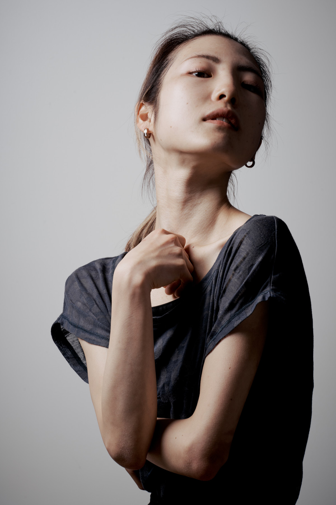
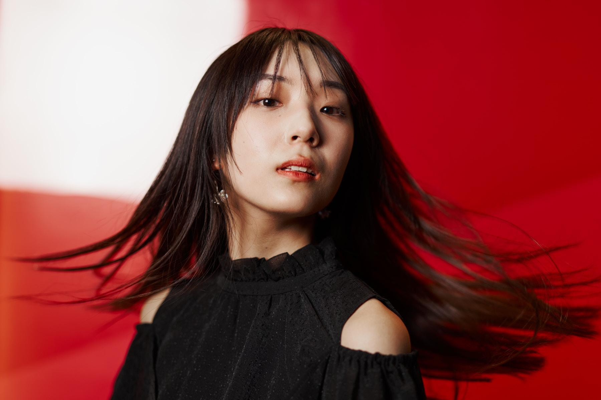
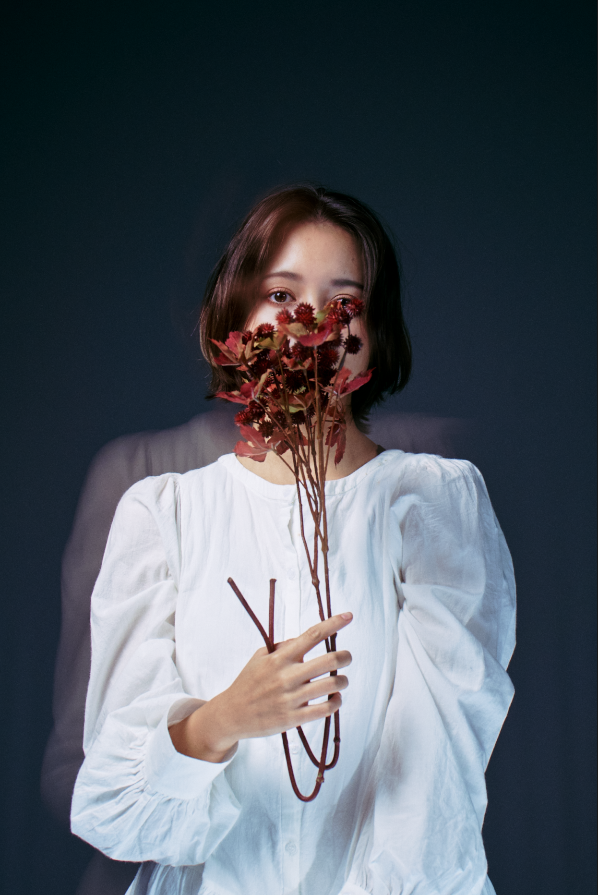
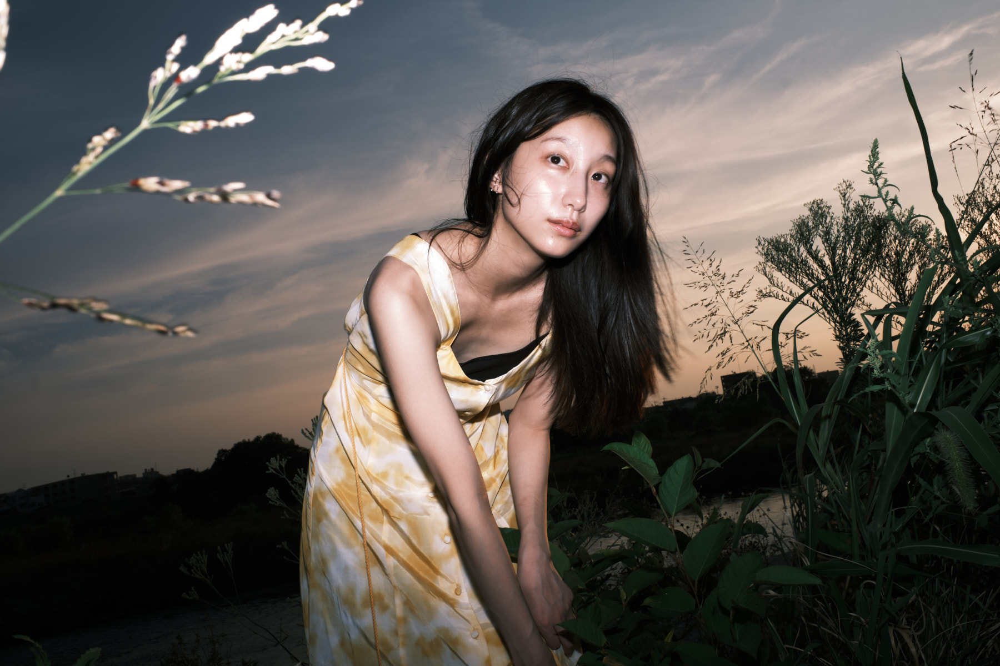
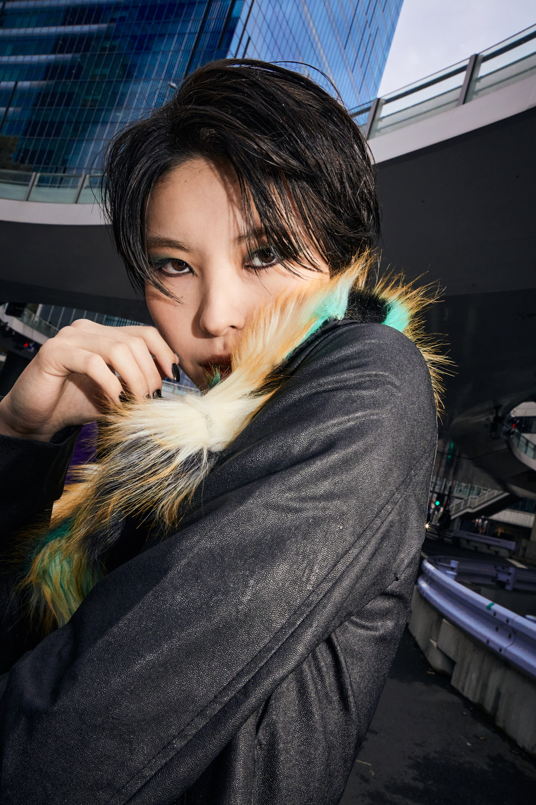
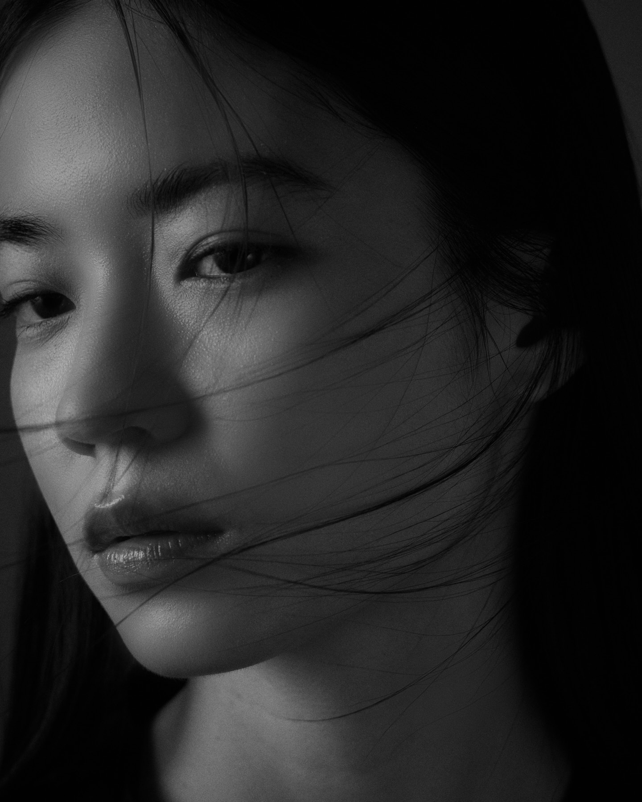
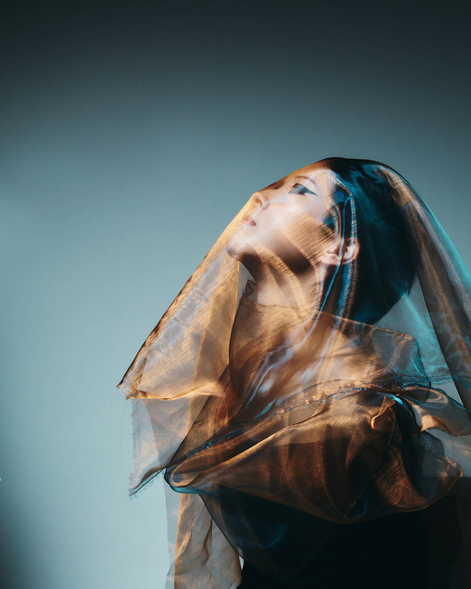
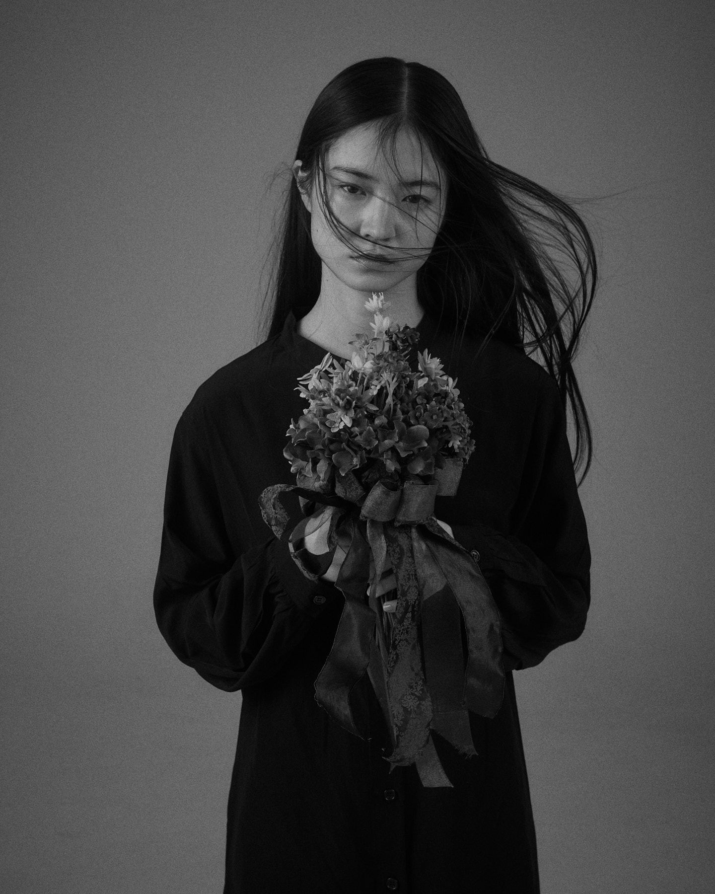
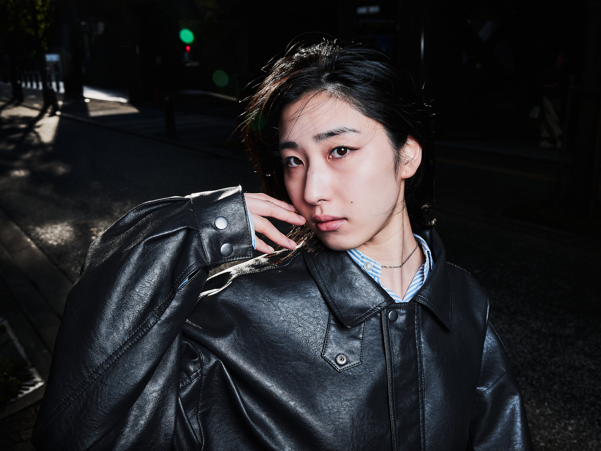

Work / Fashion
Fashion.
Editorial work — single shoots and tests. For the Damaged Tokyo lookbook campaign, see Projects.










Work / Fashion
Editorial work — single shoots and tests. For the Damaged Tokyo lookbook campaign, see Projects.








